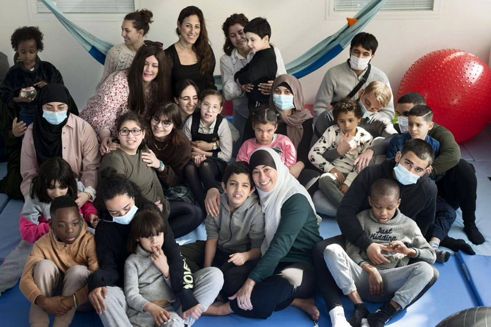

Innover dans l'accompagnement quotidien
Le Silence des Justes est une association à but non lucratif, fondée en 1996 par la Loi 1901. À l’origine destinée à l’organisation de séjours de vacances adaptés, elle accompagne aujourd’hui les enfants, adolescents et adultes atteints d’autisme, à toutes les étapes de leur parcours.
30
Années d'action
47
Structures & lieux de vie
365
Familles aidées
